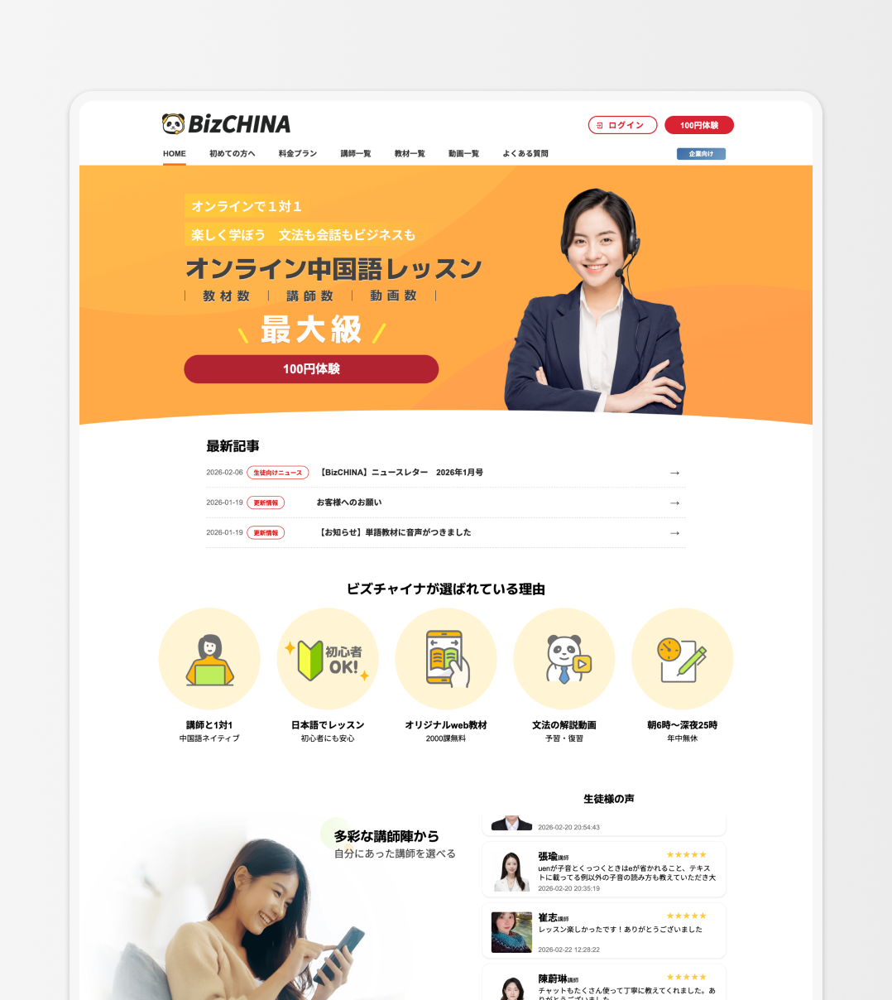
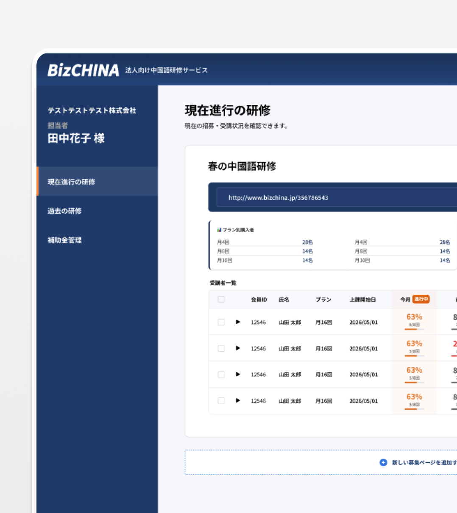

Featured Projects
厳選したプロジェクトをご紹介します

BizCHINA 教育プラットフォーム
既存サイトの老朽化という課題に対し、6人の小規模チームでUI/UX設計からVue.js実装まで一貫して担当。設計から実装まで同じ人が対応することで設計QAの往復が不要になり、設計意図を完璧に実現できました。
Key Highlights
- ブランド刷新とサイト全体の再設計
- Vue.js + uni-appによるフロントエンド実装支援
- 入会フローの簡素化によりCS問い合わせが顕著に減少

BizCHINA 法人研修管理システム
既存toC教育プラットフォームに、法人向け研修管理機能を新設。採用から受講管理・証明書発行まで、担当者が手動で行っていた業務フローをシステム化しました。
Key Highlights
- 募集ページエディターによる自己完結型の申し込みページ作成
- 受講率の色分け警告による問題の早期検知
- メール通知トグルで人事担当者の心理的負担を軽減

台北通 TaipeiPASS
台北市政府の公式市民サービスアプリ・Webサイトで、確立されたデザインシステムを活用しながら新機能のUI/UX設計を担当。フロントエンド技術の理解を活かし、複数の開発チーム間の調整とデザイン品質の統一に貢献しました。
Key Highlights
- 「ユーザー行動」軸のデザインガイドライン再構築
- 外部ベンダーへのデザインガイダンスと品質管理
- シニアデザイナーとして画面提案から経営層への説得まで担当

誠品線上 ECサイト
台湾の文化的書店ブランド「誠品」のECサイトリニューアル。 書籍中心のネット書店から、ライフスタイル全般を扱うECサイトへと転換。 サイト全体の方向性提案から、レスポンシブデザイン対応、 購入フローの最適化まで幅広く担当しました。
Key Highlights
- 書籍中心からライフスタイルECへのIA再設計を提案
- レスポンシブデザイン対応でモバイルユーザー体験を向上
- 購入フローを3ステップに最適化